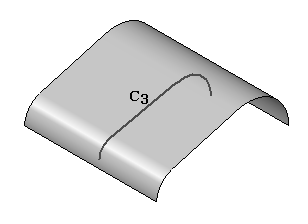
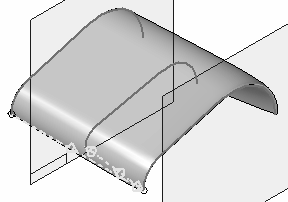
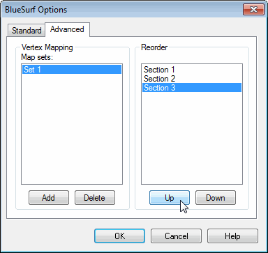
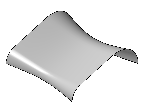
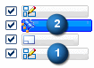
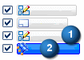

Adding cross sections into a BlueSurf (ordered modeling)
Any cross section sketch created after the BlueSurf is created will not be seen by the BlueSurf feature. When you edit a BlueSurf created in the ordered modeling environment, it only recognizes sketches created before it was created.
To add a new cross section:
-
The BlueSurf feature below was created with two cross sections (C1, C2).
First, add a new cross section (C3) that was created before the BlueSurf feature.

-
Click the Select Tool and then select the BlueSurf feature. On the ribbon bar, click Edit Definition .
-
On the BlueSurf command bar, click the Cross Section Step.

-
Identify the new cross section (C3). Notice that cross section C3 is placed last in the cross section order, which causes the BlueSurf feature to reverse direction. The cross section order below is C1, C2 and then C3. You can reorder the cross sections to make C3 be defined between C1 and C2.

-
On the BlueSurf command bar, click the options button. Click the Advanced tab.
Cross section C3 is shown as Section 3. To reorder C3 to be between C1 and C2, click Section 3 and then click Up. Click OK to apply the reorder.

The following shows the result with cross-sections ordered C1, C2 and C3.

Adding cross sections created after the BlueSurf feature
If you create a cross section (1) after the BlueSurf feature (2), the cross section will have to be moved up in the feature tree to be recognized by the BlueSurf feature.

To move the cross section up in the feature tree, click the Select tool. In PathFinder, click and hold the Blue Surf and drag it below the latest sketch as shown.

The sketch can now be seen by the BlueSurf feature.
How do I
Insert sketches into a BlueSurfConstruct a BlueSurf feature
Connect sketch elements with a BlueDot
Learn more
BlueSurf overviewEnd Conditions
Cross sections
Look up more details
BlueSurf commandBlueSurf command bar
BlueSurf Options dialog box
BlueDot command (ordered modeling)
BlueDot Edit command bar (ordered modeling)
Hide All BlueDots command (ordered modeling environment)